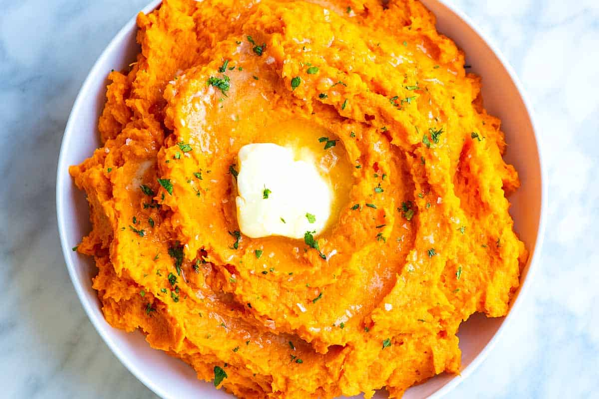

Mashed Sweet Potatoes

Description
This is a simple recipe for Mashed Sweet Potatoes that involves using not only the obvious in butter, but also a unique ingredient in maple syrup. This sweet side will have people coming back for seconds!
What you need:
- 6 sweet potatoes
- 3/4 cup of milk
- 1/2 cup butter
- 3/4 cup maple syrup
Steps:
- Bring a large pot of salted water to a boil. Add potatoes and cook until tender, 20 to 30 minutes.
- With an electric mixer on low, blend potatoes, slowly adding milk, about 1/2 a cup at a time. Use more or less to achieve desired texture. Add butter and maple syrup to taste. Blend until smooth. Serve warm.